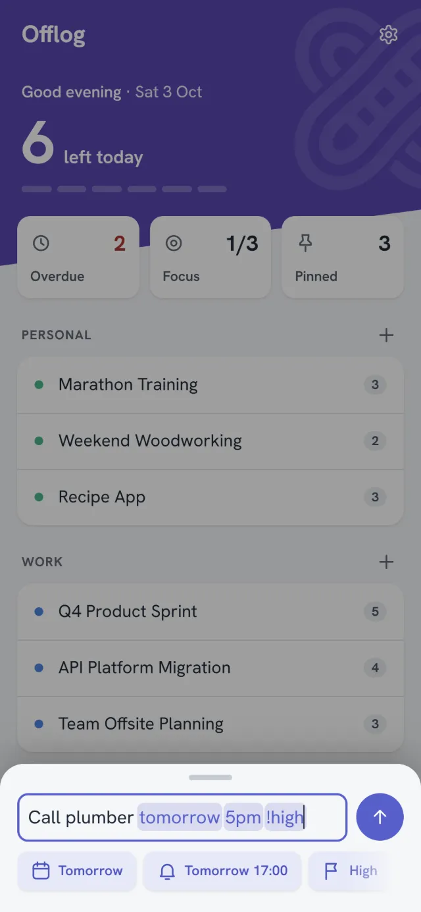
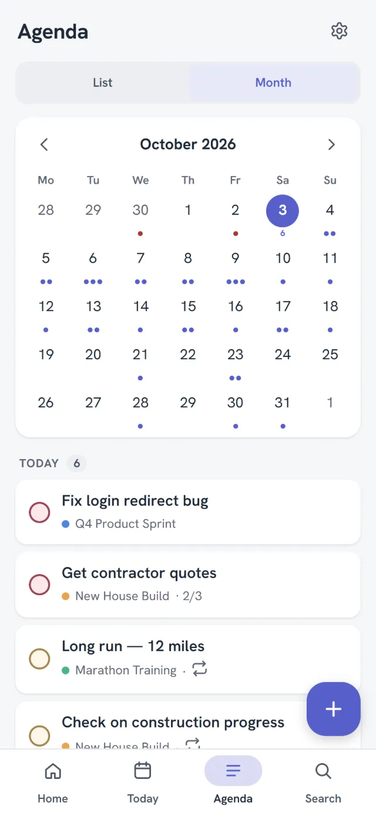
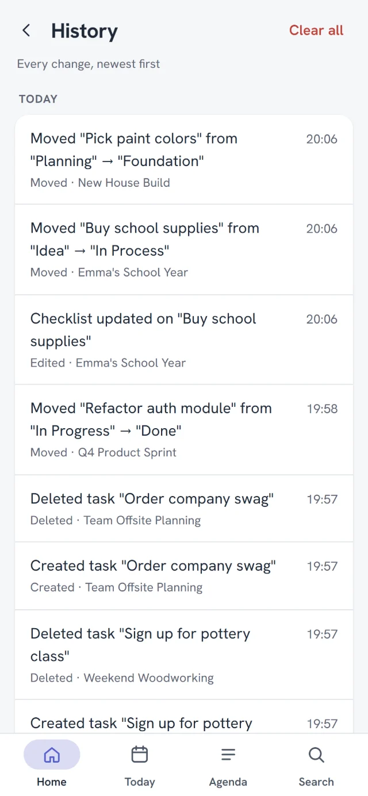

Drag a task from one status to the next. Done is simply the last status.
Focus
Pick three. Finish them. Go outside.
A long list is a source of guilt. Offlog asks you to choose up to three tasks for today, and suggests pinned and overdue ones first. Try it.
Today's three0 of 3 done
On your phone
Home
Open it and you know where you stand.
What's left today, what's overdue, and every project, one thumb away.
Add a task
Type it the way you'd say it.
"Call plumber tomorrow 5pm !high" becomes a high-priority task due tomorrow, with a reminder at 17:00. No forms to fill in.

One task
Everything about a task, on one screen.
Status, due date, steps, tags, notes and files. Tap any row to change it, and set times with scroll wheels.
Agenda
The month, at a glance.
Dots show the busy days. Tap one to see what's due.

History
Mistakes are easy to take back.
Undo a delete, a move or a finished task right from the message. Deleted tasks wait in the Recycle bin for three months, and History keeps six months of changes.

Sync
Your phone finds your PC. Nothing else is involved.
The Windows app is your own private sync point. Pair once, and every change travels straight between your devices on your Wi-Fi.
Offlog on your PC · Settings → Sync
482917
Valid for 5 minutes, one-time use
No cloud in the way
Call plumber✓ Passports
Offlog on your phone
Find my computer
Install on Windows
The Windows app keeps a full copy and hosts the sync.
Get a code
Settings → Sync → Generate a code. Six digits, valid for five minutes.
Enter it on your phone
Settings → Sync → Connect to my computer → Find my computer. Paired for good.
✓ Encrypted pairing
✓ Works offline, catches up later
✓ No account to create
✕ Not across the internet, by design
✕ Sync traffic isn't encrypted on your Wi-Fi
✕ Two phones need a PC between them
Privacy
Here's everything we collect.
It's a short receipt. No account, no analytics, no telemetry, no ads, in the app or on this website. Your tasks live on your devices, and the code is open for anyone to check.
Download the APK on your phone, then open it from the download notification or your Downloads.
Android asks whether your browser may install apps. Tap Settings, turn on Allow from this source, and go back.
Tap Install. If Google Play Protect asks, let it scan the app first.
Reading this on your PC? Point your phone's camera at the code to download the APK there.
Updates are signature-checked before they install. Until the Google Play listing is live, the APK comes from GitHub, where every release and its source code are public. No iOS or Mac version.
Questions
Plain answers.
Is it really free?
Yes. Every feature, on every device, with no paywall, no ads and no trial. Offlog is open source under the MIT license.
Do I need the Windows app?
Only to sync. The phone app and the Windows app each work fully on their own. To keep them in step, the Windows app acts as the sync point, so two phones without a PC can't sync with each other.
Does sync work away from home?
No, and that's on purpose. Your devices sync when they're on the same network. Everything still works offline in the meantime, and catches up the next time they meet.
What if I lose my phone?
If you sync, your tasks are also on your PC. For a copy off the phone, use Back up and keep the file somewhere else. The daily backups stay on the phone itself. App Lock stops someone opening the app, but your tasks aren't encrypted on the phone.
Why does Windows warn me when I install it?
The installer isn't code-signed. A certificate costs money every year, and this project won't pay for one. Click "More info", then "Run anyway". The app's own updates are checked against a signature before they install.
Who makes this?
One person, who wanted a task list that stays on their own devices. The code is on GitHub. Issues and ideas are welcome there.